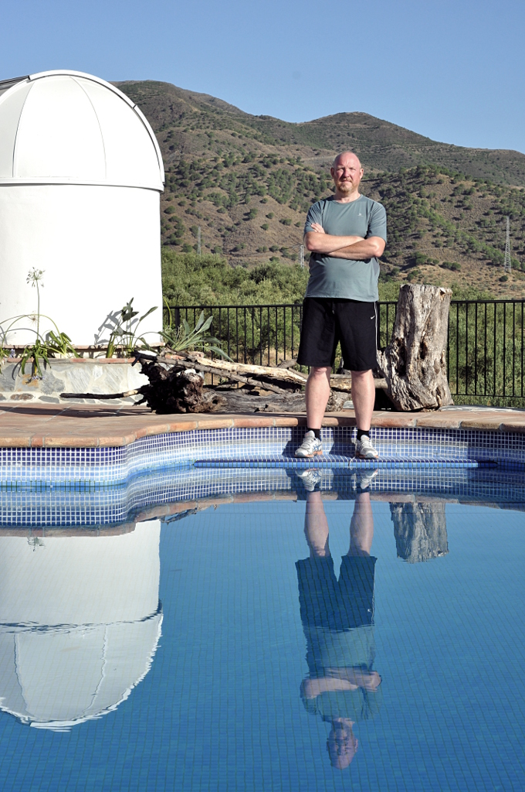

1 year as developer with AOO [Apache OpenOffice]
|  | |
Many of the big open source software packages are to a high degree driven by developers employed by companies who sponsor manpower. The sponsorship allows a faster development than otherwise possible which is a benefit for everybody. There is however a negative side to this, today we see some packages being in reality controlled by the sponsoring companies. It has from time to time been alleged that AOO is controlled by a company, my 1year in the community shows that individuals who care have a much higher influence that any sponsoring company. In ASF [Apache Software Foundation] (and AOO in particular) there is a sound balance between sponsorships and active volunteers, that balance is part of what makes ASF and AOO really cool communities. This month a year ago, I joined the Apache OpenOffice community, as with many things in life it happened by accident. I needed to upgrade my OpenOffice program and determined that it was not available in Danish. A short mail to dev@openoffice.apache.org started a chain of events. I got a mail back telling me that danish was nearly completed, and if I would be interested in translating the missing part. While doing the translation (and compiling AOO, after all I am a full blooded developer), I saw how awkward the translation process was and started to document it, that caused many funny discussions on the mailing list, and I am sure that my stupid (seen in the rear mirror) questions must have driven one or two to the edge, but everybody was helpful and did their best to help me gain the needed knowledge. Having documented the current process I started on a bigger challenge, to define an automated failure proof work process. |
My motivation and curiosity was rewarded by the community with committer status. I thought, they did it, to stop my flow of small patches (as committer I am allowed to change source/web etc. directly) but reality is that the community wanted to embrace my ideas. I learned that AOO does not have a steering committee that accept/reject patches, all committers have equal rights and responsibilities. AOO works The Apache Way, all members of the community are equal, there is a group (PMC [Project management committee] ) that handles project logistic. The biggest and most positive surprise came when we had to decide on a new release, ALL community member were asked to vote and give their opinion. That freedom and trust gave my motivation a big kick.
slowly over time, I got deeper involved. wiki.openoffice.org suffered from lack of maintenance, that brought me in contact with an internal ASF project called "infra". INFRA is a group of volunteers that keeps the ASF infrastructure floating. Infra gave me the possibility to install a new vm, reinstall the wiki and maintain it. Infra used the same method as the old AOO community members, they let me do things alone, helped when asked, but silently watched me and held a hand out when I was about to fall.
The AOO community can best be viewed as loads of specialists, each concentrating on their field of interest, but at the same time everybody are patient and open to help each other. Some of the members spent a lot of time on the community itself, making sure its a nice place to be and that everybody is listened to.
About half a year ago, we had some strong discussions about the LO/AOO split, to me the split is really wasting human resources. The discussion was mixed with accusations that IBM controlled AOO. I found it interesting to note that the volunteers I knew was IBM employees did have quite different opinions (not following the company line, as others claimed) and was just individuals like the rest of us. I complained and argued that our PMC should do something, because I saw the PMC as a steering committee (hence the name), but I soon learned the hard fact, PMC is not controlling anything, but merely a group of volunteers that among others care for the community as a whole.
One day my inbox contained a new surprise, an invitation to be part of PMC. Being PMC focused my interest on other corners of the community, and It interesting to see that developers are just a corner of the community, there are other parts equally important like QA, marketing, web site maintenance.
Today I maintain together with other volunteers our core services, participate in design discussions, and develop my own little part (a new translation workflow). I am also deeply involved in infra work, where I integrate a new monitoring system, that covers services and vms for all Apache projects.
A big thank to ASF and AOO for showing me, how software can be developed in a true free spirit !
Give it a try, you don't need to use as many hours as I do, to feel how motivating the free spirit can be.
Regards
jan I
Danish, living in southern Spain. I have designed/developed network protocols, embedded OS and SCADA systems since '77.